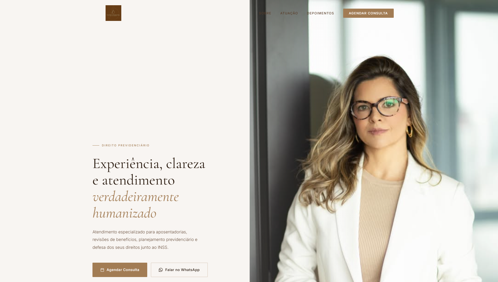
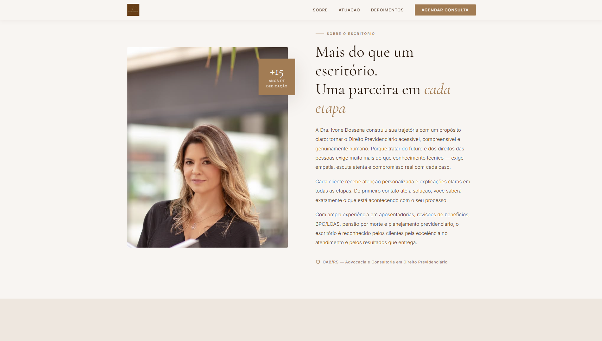
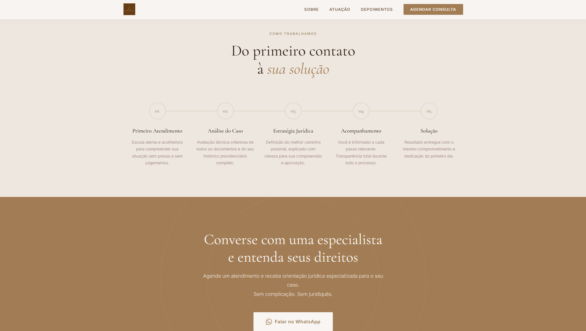
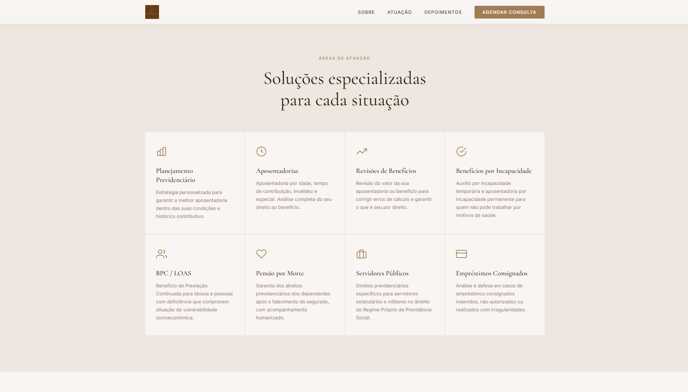
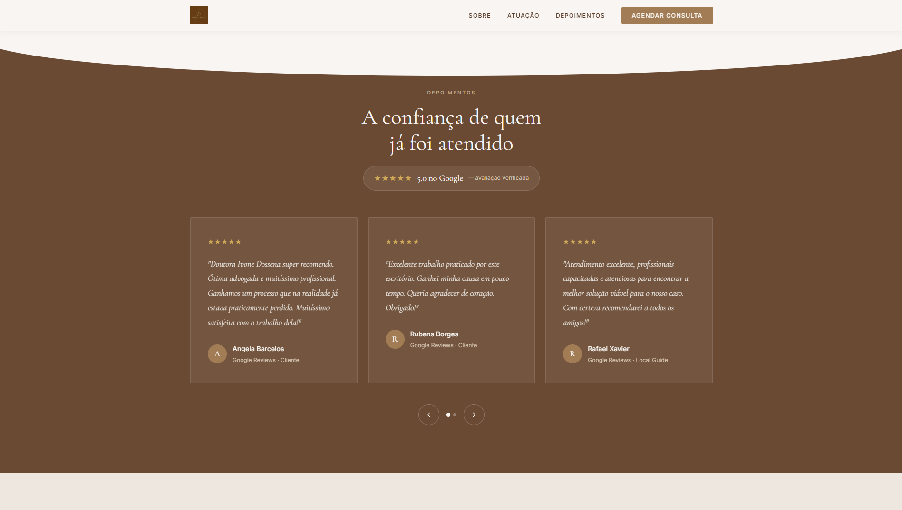
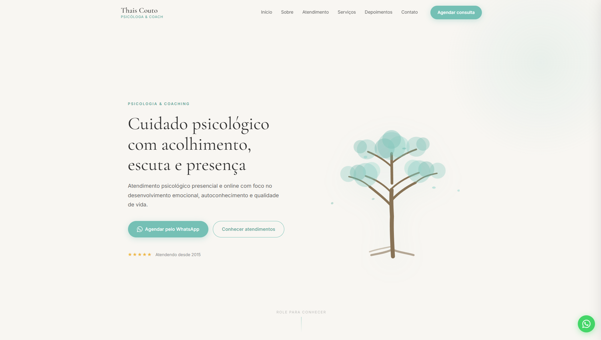

Redesign conceitual para advocacia com estética clean, sofisticada e institucional, valorizando autoridade, clareza e presença digital profissional.
Estudo conceitual desenvolvido para fins de aprendizado e demonstração técnica, utilizando referências públicas para apresentar uma possível direção de redesign.
Projeto publicado ↗


"Interface limpa, moderna e institucional — a confiança começa antes do primeiro contato."
Este estudo conceitual teve como objetivo explorar uma proposta mais sofisticada para a presença digital de um escritório de advocacia. O redesign buscou transmitir autoridade, elegância e credibilidade através de uma estética minimalista, animações discretas e uma hierarquia visual bem definida.
Durante o desenvolvimento foram estudadas referências internacionais de escritórios jurídicos premium para criar uma interface limpa, moderna e institucional. O resultado prioriza leitura confortável, composição equilibrada e microinterações capazes de enriquecer a experiência sem comprometer a sobriedade necessária para o segmento.

